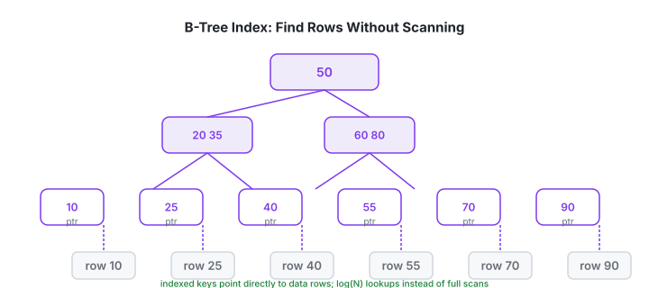
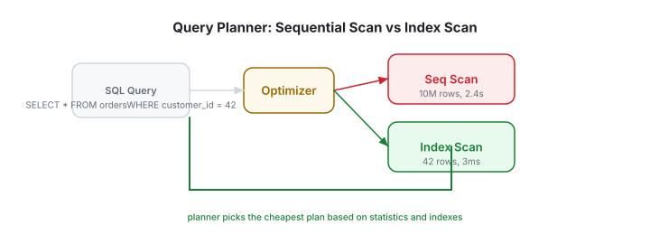
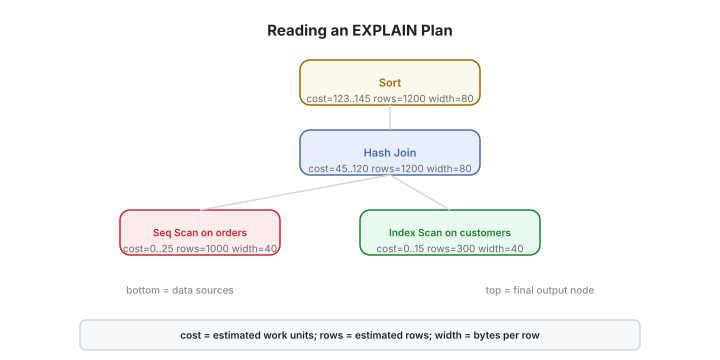
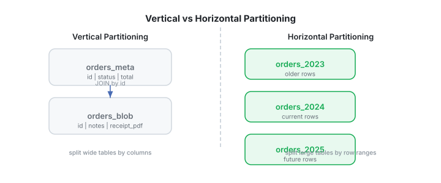
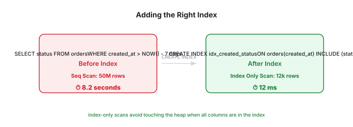

Database Optimization: Indexes, Query Plans, Partitioning
Chapter 1
Introduction
Slow databases are one of the most common causes of slow applications. The good news is that most performance problems are predictable: a missing index, a bad query, an oversized table, or too many rows scanned. This tutorial teaches you how to find and fix them using real queries you can run yourself.
Before you start
- Comfortable with SQL and one relational database (we use PostgreSQL).
- Know how to create tables and run SELECT / JOIN / WHERE.
- A laptop that can run Docker is enough for all exercises.
What you'll learn
- ✓ How B-tree indexes work
- ✓ Single-column, composite, partial, and covering indexes
- ✓ How to read EXPLAIN / EXPLAIN ANALYZE output
- ✓ Partitioning tables by range, list, and hash
- ✓ Real query tuning workflow
- ✓ Capstone: optimize a slow e-commerce store
Real-world impact
- Shopify reduced checkout latency by adding targeted partial indexes during flash sales.
- GitHub partitions large event tables by time to keep queries fast and archival cheap.
- Stripe uses carefully chosen composite indexes to look up transactions by merchant, status, and date.
- Uber partitions trip data by city and date; query time stays flat as data grows.
Chapter 2
Setup & Sample Database
We will use PostgreSQL because its EXPLAIN output is the most detailed teaching tool. Every example also translates to MySQL, MariaDB, SQL Server, or SQLite with small syntax changes.
# Start PostgreSQL locally with Docker
docker run -d --name postgres-opt \
-e POSTGRES_USER=admin \
-e POSTGRES_PASSWORD=secret \
-e POSTGRES_DB=shop \
-p 5432:5432 \
postgres:16
# Connect with
psql
docker exec -it postgres-opt
psql -U admin -d shop-- Create realistic e-commerce tables CREATE TABLE customers ( id bigserial PRIMARY KEY,
email text NOT NULL,
city text NOT NULL,
created_at timestamptz NOT NULL DEFAULT now() );
CREATE TABLE products ( id bigserial PRIMARY KEY,
name text NOT NULL,
category text NOT NULL,
price numeric(10,
2) NOT NULL );
CREATE TABLE orders ( id bigserial PRIMARY KEY,
customer_id bigint NOT NULL REFERENCES customers(id),
status text NOT NULL CHECK (status IN ('pending','shipped','delivered','cancelled')),
total numeric(12,
2) NOT NULL,
created_at timestamptz NOT NULL DEFAULT now() );
CREATE TABLE order_items ( id bigserial PRIMARY KEY,
order_id bigint NOT NULL REFERENCES orders(id),
product_id bigint NOT NULL REFERENCES products(id),
qty int NOT NULL,
price numeric(10,
2) NOT NULL );
-- Insert seed data (small: 10k rows) INSERT INTO customers (email,
city,
created_at) SELECT 'user' || i || '@example.com', (ARRAY
['Mumbai','Delhi','Bangalore','Chennai','Kolkata']
)[1 + (i % 5)],
now() - (random() * 365 * interval '1 day') FROM generate_series(1,
10000) AS i;
INSERT INTO products (name,
category,
price) SELECT 'Product ' || i, (ARRAY
['Electronics','Clothing','Home','Books','Sports']
)[1 + (i % 5)], (random() * 5000 + 100)::numeric(10,
2) FROM generate_series(1,
500) AS i;
INSERT INTO orders (customer_id,
status,
total,
created_at) SELECT 1 + (i % 10000), (ARRAY
['pending','shipped','delivered','cancelled']
)[1 + (i % 4)], (random() * 5000)::numeric(12,
2),
now() - (random() * 365 * interval '1 day') FROM generate_series(1,
50000) AS i;
INSERT INTO order_items (order_id,
product_id,
qty,
price) SELECT 1 + (i % 50000),
1 + (i % 500),
1 + (i % 5), (random() * 5000)::numeric(10,
2) FROM generate_series(1,
150000) AS i;Checkpoint
Confirm the tables and row counts with
\dt
and
SELECT count(*) FROM orders;
. You should see 50,000 orders and 150,000 line items.
Chapter 3
Indexing Deep Dive
An index is a separate data structure that lets the database find rows without scanning the whole table. The most common index type in PostgreSQL, MySQL, and MongoDB is a B-tree. Think of it as a sorted, searchable shortcut.
B-tree index structure

Index types
- B-tree : equality, range, sorting. Default and most common.
- Hash : equality only. Rarely needed.
- GiST / GIN / SP-GiST : full-text, JSON, geospatial, arrays.
- Partial : only index rows matching a predicate.
- Covering : index contains all columns a query needs.
Trade-offs
- Speeds up reads.
- Slows down writes (INSERT/UPDATE/DELETE) because the index must be maintained.
- Uses extra disk space.
- Too many indexes can confuse the optimizer.
-- Single-column index for customer lookups CREATE INDEX idx_orders_customer_id ON orders(customer_id);
-- Composite index: status first,
then created_at for date-range status reports -- Column order matters! Put the most selective column first. CREATE INDEX idx_orders_status_created ON orders(status,
created_at);
-- Partial index: only delivered orders,
used for monthly revenue reports CREATE INDEX idx_orders_delivered_created ON orders(created_at) WHERE status = 'delivered';
-- Covering index: includes total so the heap is not touched CREATE INDEX idx_orders_status_created_total ON orders(status,
created_at) INCLUDE (total);
-- Expression index: index lower-cased emails for case-insensitive login CREATE INDEX idx_customers_email_lower ON customers(LOWER(email));-- Composite index column order demo -- Good: status is highly selective here,
created_at supports the range CREATE INDEX idx_orders_status_date ON orders(status,
created_at);
-- Query that uses the index efficiently SELECT * FROM orders WHERE status = 'delivered' AND created_at >= now() - interval '7 days';
-- Bad column order: created_at first cannot filter status efficiently CREATE INDEX idx_orders_date_status ON orders(created_at,
status);
-- The planner may still use it,
but a status-first index is usually better.Quiz: Indexes always make writes faster.
Chapter 4
Query Execution Plans
EXPLAIN is the most important tool in database optimization. It shows how the database plans to execute a query before it runs. EXPLAIN ANALYZE runs the query and adds actual timing. Together they tell you exactly where time is spent.
How the query optimizer chooses a plan

Reading an EXPLAIN plan tree

-- Before adding an index: likely a sequential scan EXPLAIN ANALYZE SELECT * FROM orders WHERE status = 'delivered' AND created_at >= now() - interval '7 days';
-- Output to look for: -- Seq Scan on orders (cost=0.00..2291.00 rows=228 width=48) (actual time=0.023..8.421 rows=230 loops=1) -- Filter: ((status = 'delivered') AND (created_at >= ...)) -- Rows Removed by Filter: 49770 -- Planning Time: 0.123 ms -- Execution Time: 8.512 ms-- Add a covering index and re-run CREATE INDEX idx_orders_status_created_total ON orders(status,
created_at) INCLUDE (total);
EXPLAIN ANALYZE SELECT total FROM orders WHERE status = 'delivered' AND created_at >= now() - interval '7 days';
-- Output to look for: -- Index Only Scan using idx_orders_status_created_total -- Heap Fetches: 0 (perfect: no table access needed)8.5 ms
Before index
0.08 ms
After index
100x
Speedup
EXPLAIN fields to watch
- cost — estimated work; lower is better.
- rows — estimated rows the planner expects; compare to actual.
- actual time — real milliseconds (only in ANALYZE).
- Seq Scan — full table scan; fine for tiny tables, bad for big ones.
- Index Scan / Index Only Scan — using an index; good.
- rows removed by filter — how many rows were discarded after reading.
- Heap Fetches — number of times the database had to look at the table; 0 is ideal for index-only scans.
Chapter 5
Partitioning
When a table grows too large, indexes and queries slow down. Partitioning splits one logical table into smaller physical pieces. Queries that target a specific partition scan far fewer rows and can be maintained independently.
Vertical vs horizontal partitioning

-- Range partitioning by month for orders CREATE TABLE orders_partitioned ( id bigserial,
customer_id bigint NOT NULL,
status text NOT NULL,
total numeric(12,
2) NOT NULL,
created_at timestamptz NOT NULL,
PRIMARY KEY (id,
created_at) ) PARTITION BY RANGE (created_at);
CREATE TABLE orders_2024_01 PARTITION OF orders_partitioned FOR VALUES FROM ('2024-01-01') TO ('2024-02-01');
CREATE TABLE orders_2024_02 PARTITION OF orders_partitioned FOR VALUES FROM ('2024-02-01') TO ('2024-03-01');
CREATE TABLE orders_2024_03 PARTITION OF orders_partitioned FOR VALUES FROM ('2024-03-01') TO ('2024-04-01');
-- Queries touching only one month skip the rest SELECT * FROM orders_partitioned WHERE created_at >= '2024-02-01' AND created_at < '2024-03-01';
-- Check partition pruning EXPLAIN SELECT * FROM orders_partitioned WHERE created_at >= '2024-02-01' AND created_at < '2024-02-02';
-- Should show only orders_2024_02 being scanned.Partitioning strategies
- Range : time series, events, orders by date.
- List : discrete categories, e.g., orders by region or status.
- Hash : even distribution when no natural range exists.
- Composite : range by date, then hash by tenant.
Benefits
- Faster queries that target a partition.
- Cheaper vacuum, analyze, and reindex on one partition.
- Easy archival: detach old partitions instead of deleting rows.
- Can place hot partitions on faster storage.
Chapter 6
Practical Tuning Workflow
Optimization is not guesswork. It is a repeatable workflow: measure, identify the slow query, understand the plan, apply the smallest fix that helps, and verify with EXPLAIN ANALYZE.
The before-and-after of adding the right index

-- Step 1: find slow queries from pg_stat_statements SELECT query,
mean_exec_time,
calls,
rows FROM pg_stat_statements ORDER BY mean_exec_time DESC LIMIT 10;
-- Step 2: run EXPLAIN ANALYZE on the slow query EXPLAIN (ANALYZE,
BUFFERS,
FORMAT TEXT) SELECT o.id,
o.total,
c.email FROM orders o JOIN customers c ON c.id = o.customer_id WHERE o.status = 'delivered' AND o.created_at >= now() - interval '30 days' ORDER BY o.total DESC LIMIT 100;-- Step 3: design the index based on the query -- Predicates: status = 'delivered',
created_at >= ... -- Join key: customer_id -- Sort: total DESC -- Output: id,
total,
email (from customers) CREATE INDEX idx_orders_status_created_total_cust ON orders(status,
created_at DESC,
total,
customer_id);
-- Step 4: re-run EXPLAIN ANALYZE and compare -- Look for: Index Scan,
lower cost,
no Sort step,
reduced buffers.Common query anti-patterns
-
Functions on indexed columns
:
WHERE DATE(created_at) = '2024-06-01'cannot use a B-tree index on created_at. Use range instead. -
Leading wildcards
:
LIKE '%burger%'defeats a regular B-tree. Use full-text search (GIN/GiST) or trigram indexes. - Select * : fetching unnecessary columns prevents covering indexes.
- Wrong join order : small tables first, filter aggressively before joining.
-
Missing statistics
: run
ANALYZEafter bulk loads or index creation.
Index design cheat sheet
- Equality first : put columns with = conditions before range columns.
- Sort columns next : if you ORDER BY, include those columns.
- Covering : INCLUDE columns the query returns but does not filter on.
- Partial : when most queries filter on the same predicate, index only those rows.
-
Remove unused
: monitor
pg_stat_user_indexesand drop indexes with zero scans after a representative period.
Chapter 7
Monitoring
You cannot optimize what you do not measure. PostgreSQL and most databases expose system views that tell you which queries are slow, which indexes are used, and where locks wait.
-- Enable pg_stat_statements in postgresql.conf: -- shared_preload_libraries = 'pg_stat_statements' -- pg_stat_statements.track = all -- Top 10 queries by total time SELECT query,
calls,
round(total_exec_time::numeric,
2) AS total_ms,
round(mean_exec_time::numeric,
2) AS avg_ms,
rows FROM pg_stat_statements ORDER BY total_exec_time DESC LIMIT 10;
-- Index usage by table SELECT schemaname,
relname,
indexrelname,
idx_scan,
idx_tup_read FROM pg_stat_user_indexes ORDER BY idx_scan DESC;-- Tables with the most sequential scans (candidates for indexing) SELECT relname,
seq_scan,
seq_tup_read,
idx_scan,
n_live_tup FROM pg_stat_user_tables WHERE seq_scan > 0 ORDER BY seq_tup_read DESC LIMIT 10;
-- Long-running queries right now SELECT pid,
now() - query_start AS duration,
query FROM pg_stat_activity WHERE state = 'active' AND now() - query_start > interval '1 second' ORDER BY duration DESC;Golden metrics
- Query latency p95/p99 : what the slowest 5% of users experience.
- Index hit ratio : high ratio means most reads are served from memory.
- Active connections : watch for pool exhaustion.
- Deadlocks and lock waits : signs of contention or bad transaction order.
Chapter 8
Capstone: Optimize an E-Commerce Store
1. What is this project?
You inherit a slow e-commerce database. Product managers complain that the dashboard and search are sluggish. Your job is to make measurable improvements using only indexes, query rewrites, and partitioning.
2. What it covers?
- Dashboard query "revenue by category this month" takes 6 seconds.
- Customer lookup by email is case-sensitive and does not use an index.
- Order history page for a customer scans the entire orders table.
- "Recent delivered orders" query returns columns from orders, customers, and order_items, causing heavy joins.
- The orders table is expected to grow by 1M rows per month.
3. How it is done?
Run the sample database script, use
EXPLAIN ANALYZE
to measure each slow query, then design the smallest set of indexes that fixes all four problems and partition orders by month for future scale.
-- Problem 1: revenue by category this month SELECT p.category,
SUM(oi.qty * oi.price) AS revenue FROM order_items oi JOIN products p ON p.id = oi.product_id JOIN orders o ON o.id = oi.order_id WHERE o.status = 'delivered' AND o.created_at >= date_trunc('month',
now()) GROUP BY p.category;
-- Problem 2: case-insensitive customer lookup SELECT * FROM customers WHERE email = 'User42@Example.COM';
-- Problem 3: customer order history SELECT * FROM orders WHERE customer_id = 1234 ORDER BY created_at DESC LIMIT 20;
-- Problem 4: recent delivered orders with items SELECT o.id,
o.total,
c.email,
oi.product_id,
oi.qty FROM orders o JOIN customers c ON c.id = o.customer_id JOIN order_items oi ON oi.order_id = o.id WHERE o.status = 'delivered' AND o.created_at >= now() - interval '7 days';-- Suggested solution indexes (test and measure each one) CREATE INDEX idx_customers_email_lower ON customers(LOWER(email));
CREATE INDEX idx_orders_customer_created ON orders(customer_id,
created_at DESC);
CREATE INDEX idx_orders_status_created ON orders(status,
created_at) INCLUDE (total,
customer_id);
CREATE INDEX idx_order_items_order_product ON order_items(order_id,
product_id,
qty,
price);
-- For the dashboard,
a covering index on order_items may be even better CREATE INDEX idx_order_items_product_order ON order_items(product_id,
order_id,
qty,
price);
-- Then update statistics ANALYZE orders;
ANALYZE order_items;4. What did we learn from this capstone project?
- EXPLAIN ANALYZE reveals whether a query scans the whole table or uses an index.
- Composite, partial, and covering indexes can turn multi-second queries into millisecond responses.
- Column order in an index matters: equality columns should come before range columns.
- Partitioning keeps query time flat as the orders table grows by millions of rows per month.
5. How can I enhance this project in the future?
- Automate monthly partition creation and attach old partitions to a cold-storage archive.
-
Track query performance with
pg_stat_statementsand drop unused indexes. - Add a trigram index for fuzzy product search and a full-text index for product descriptions.
- Replace in-memory seed data with a load test that simulates concurrent shoppers.
- Set up alerts when p95 query latency crosses a threshold.